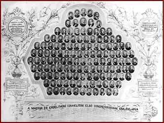

|  | |||
| After the emancipation, the Congress was convened in order to bring about a homogeneous organization of the Jewish communities. It did not manage to fulfil the aim; on the contrary, it led to the trisecting of Jews of Hungary. The three resulting groups were the traditional Orthodox Jews, the Neologs, who fought for the modernization of Jewish life and followed the resolutions of the Congress, and the Status quo ante group who kept to the conditions before the Congress. | |||